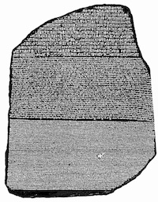
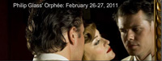
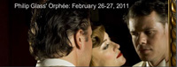
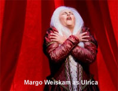

SpearheadNews.com
Super
News
2010

Casting News
Events
Rehearsal Schedules
Interviews
Photos
Reviews
More Fun Stuff!
The Super Handbook
San Francisco Opera
Links
Classifieds
Contacts
Archives

SpearheadNews.com is not officially
affiliated with any performing arts organization.
All photographs
remain the property of their copyright holders.
Update
Second Audition Announced
for
THE RING

If You've Forgotten the Story of The Ring, Maybe it's Time for a Little
Anna Russell
SF Opera Supers Appear in Chicago Lyric Opera Promotion

Exclusive Sneak Peek Video of
Orphée Rehearsal

Scott Pearson Snags Role in
Matt Damon Movie
San Francisco Opera Announces 2011-2012 Season with lots of Turandot and Carmen
as well as a few surprises
Festival Opera in Walnut Creek will feature La Traviata and Frank Loesser's
The Most Happy Fella for the 2011 Summer Season
The Story of D (Aïda)
A New Review from Tom Reed
Super Coordinator
April Busch
The Soprano Octave
Mae West sings Delilah ("C'mere, Sammy!")
The Day I Met Caruso
Yes, Giorgio now on DVD
& Why You Care!
Listen to opera at the dawn of recording (1877 - 1929)
SF Opera Super Cast in HBO Film
Hemmingway & Gelhorn
Now Shooting in the Bay Area
ASMs Have Actual Lives
SF Opera Supers appearing in
Philip Glass: Orphée
Longtime SFO Costumer
Now Shooting in the Bay Area
ASMs Have Actual Lives
SF Opera Supers appearing in
Philip Glass: Orphée
Longtime SFO Costumer
and Designer
Walter Mahoney Dies
The Exploratorium Features
SF Opera Wig Master
Gerd Mairandres
In Memoriam
Frank Sommers
The Fall 2010 Season:
Cyrano
Paul Ziller's A Koken's
Butterfly
Madama
Butterfly
Figaro
Werther
Aida
2003 - 2010
Order prints
of
your favorite Super Photos
at
Shutterfly

Remember What Supering Was Like a Few Years Back?
Take a Trip Down Memory Lane
With Ulrica 
Starting With #1